模型与推理 15
Models & Inference · 从一次前向、一份权重、一个 token 开始看
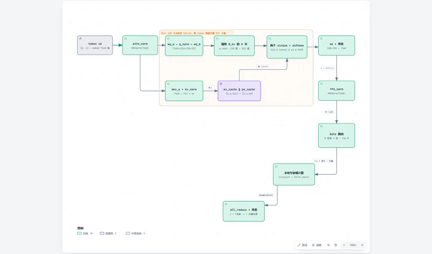
DeepSeek-V3 inferencedeepseek-ai/DeepSeek-V3
DeepSeek-V3 stores 576 numbers per token per layer instead of 32768 — the MLA trick, in code.

DeepSeek-OCRdeepseek-ai/DeepSeek-OCR
DeepSeek-OCR compresses a page into 273 visual tokens, then decodes them back into text and coordinates.
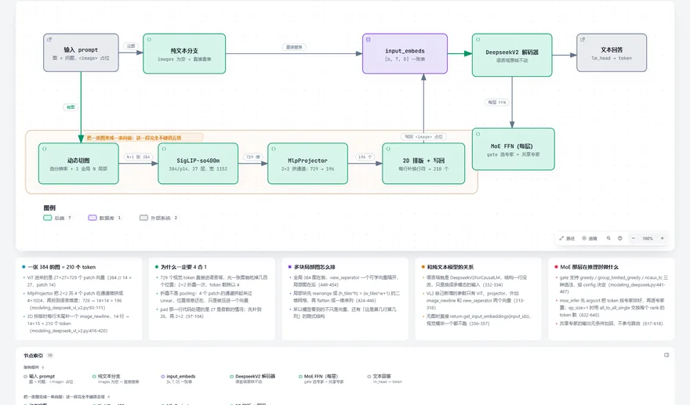
DeepSeek-VL2deepseek-ai/DeepSeek-VL2
DeepSeek-VL2 slices an image, folds each slice into a few tokens, and puts them inline with the text.
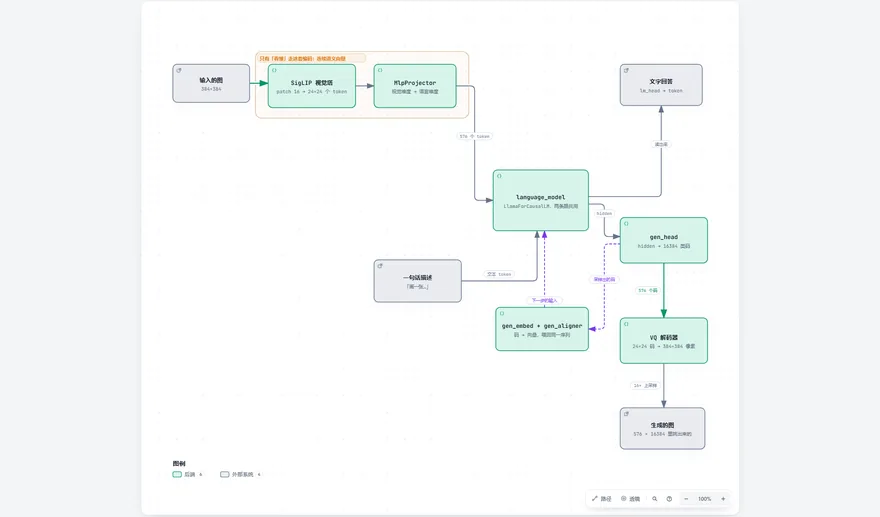
Janusdeepseek-ai/Janus
Janus keeps two image encoders, one for understanding and one for generation, on a single language model.
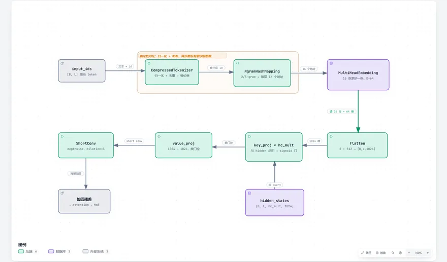
Engramdeepseek-ai/Engram
Engram replaces some computation with a lookup table of n-gram combinations.
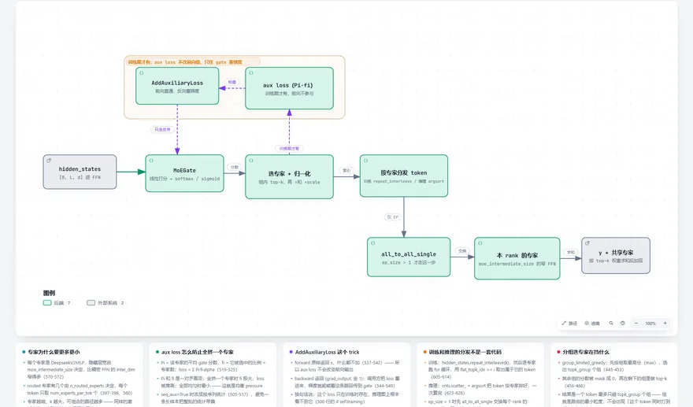
DeepSeekMoE 路由deepseek-ai/DeepSeek-VL2
DeepSeekMoE picks a few small experts per token, and an auxiliary loss keeps them from collapsing onto one.
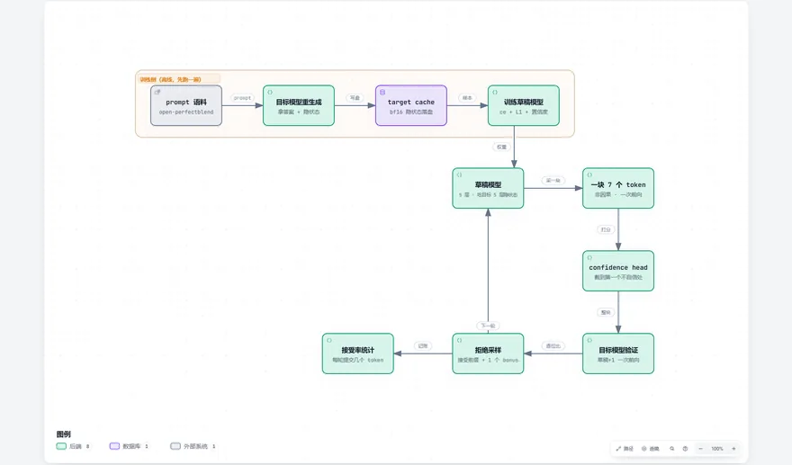
DeepSpecdeepseek-ai/DeepSpec
DeepSpec drafts several tokens, then verifies the whole block in one pass.
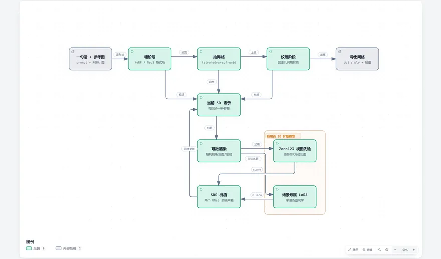
DreamCraft3Ddeepseek-ai/DreamCraft3D
DreamCraft3D grows a 3D shape from a prompt, extracts a mesh, then paints it.
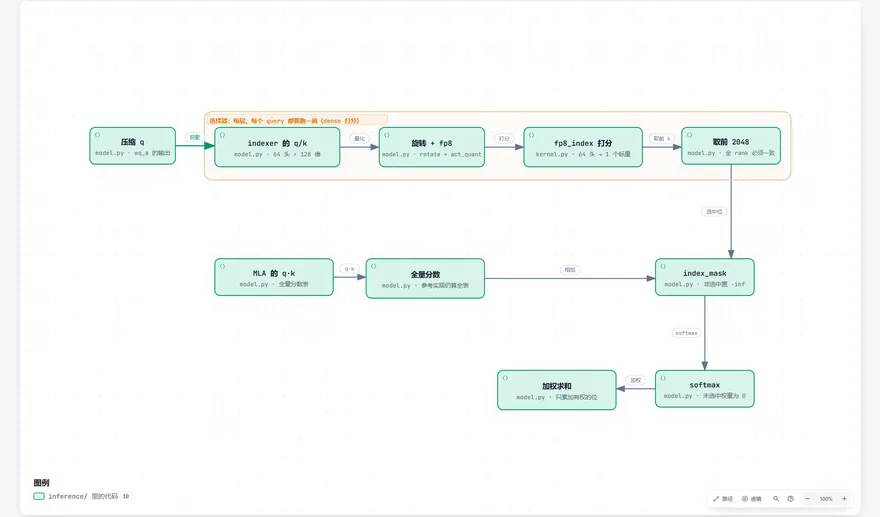
DeepSeek-V3.2-Expdeepseek-ai/DeepSeek-V3.2-Exp
The sparse attention in V3.2 selects 2048 keys per query with a small indexer.
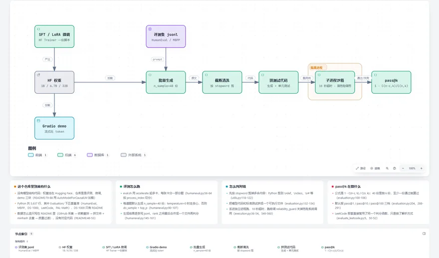
DeepSeek-Coderdeepseek-ai/DeepSeek-Coder
The DeepSeek-Coder repo contains the evaluation harness, not the model.
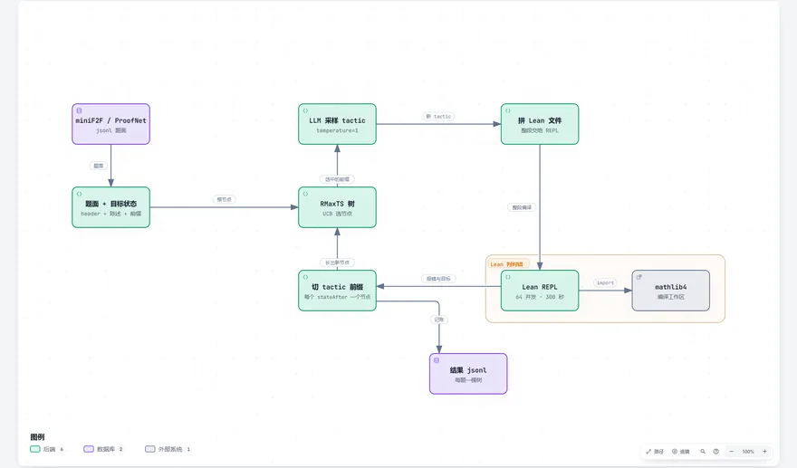
DeepSeek-Prover-V1.5deepseek-ai/DeepSeek-Prover-V1.5
DeepSeek-Prover guesses one proof step at a time and Lean decides whether it is valid.
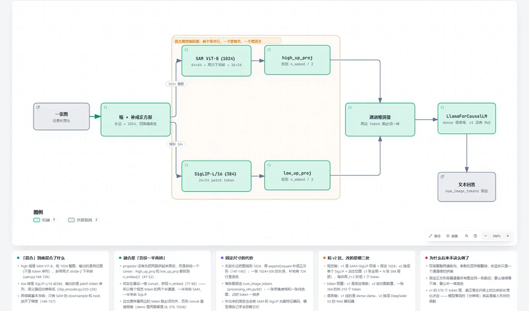
DeepSeek-VLdeepseek-ai/DeepSeek-VL
DeepSeek-VL v1 runs two vision encoders on the same image and concatenates their features.
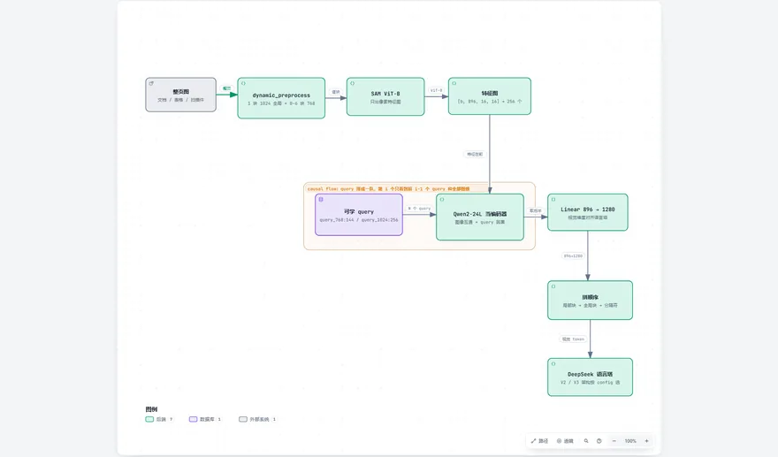
DeepSeek-OCR 2deepseek-ai/DeepSeek-OCR-2
DeepSeek-OCR 2 reads an image with a sequence of learned queries instead of a single pass.
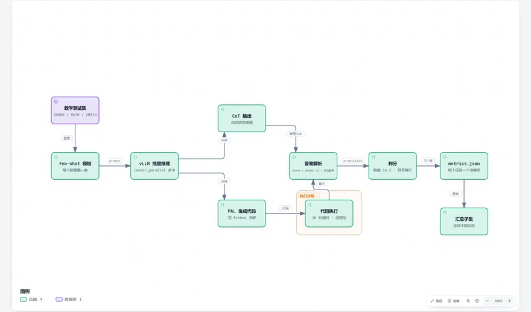
DeepSeek-Mathdeepseek-ai/DeepSeek-Math
DeepSeek-Math extracts the answer from a long chain of reasoning, then compares numerically and symbolically.
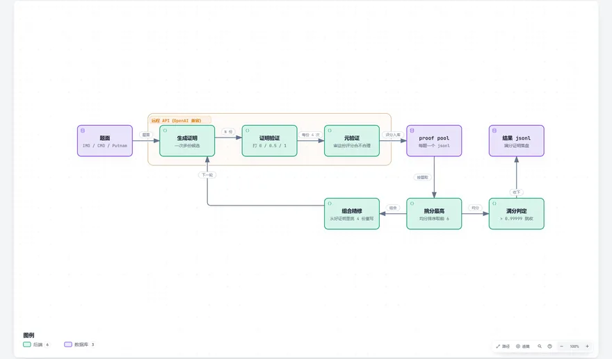
DeepSeekMath-V2deepseek-ai/DeepSeek-Math-V2
DeepSeekMathV2 has the model score its own proofs, then revises the best ones.